| Oktas | Symbol | Meaning |
|---|---|---|
| 0 | 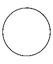 |
Sky clear |
| 1 | 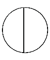 |
Few clouds |
| 2 | Few clouds | |
| 3 | 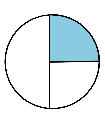 |
Scattered clouds |
| 4 | 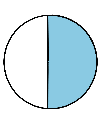 |
Scattered clouds |
| 5 | 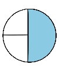 |
Broken clouds |
| 6 | Broken clouds | |
| 7 | 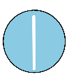 |
Broken clouds |
| 8 | 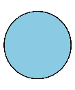 |
Overcast |
| 9 | 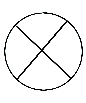 |
Sky obscured |
| (/) | 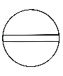 |
Weather measurements were not conducted |
Figure 10: Oktas chart
Experts use a special instrument called ceilometer to measure the cloud height. They also utilise weather Radars and Satellites for cloud measurement. Refer to Figure 11 (a) and (b) for more details. Knowing the height of clouds is essential for accurate weather forecasting and for pilots navigating through cloudy skies.
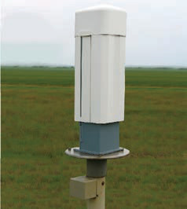
(a) Ceilometer
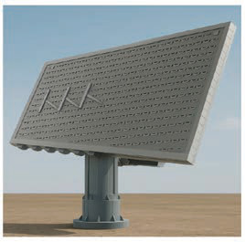
(b) Radar
Figure 11: Instruments used to measure the height of clouds